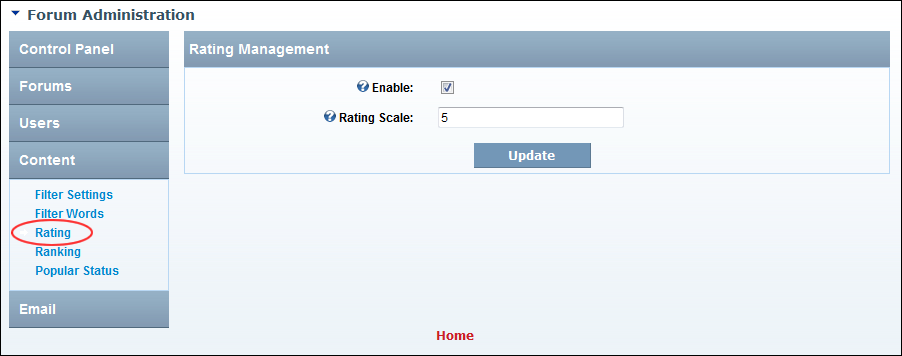

Managing Rating of Threads
How to enable or disable the users to rate threads and optionally replace the star icon(s) with text. Note: Rating must be enabled on individual forums. See "Setting Forum Options"
- Go to the Forum Administration page. See "Navigating to the Forum Admin Page"
- In the left-hand panel, select Content > Rating. This displays the Rating Management window.
- At Enable, to enable users to rate a thread - OR - to disable.
- In the Rating Scale text box, enter a number that represents the highest rating for a thread. This sets the maximum number of stars. The default is 5. Note: Changing this will not update existing post ratings.
- Click the Update button.

Enabling Thread Rating and Setting Maximum Number of Stars